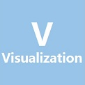
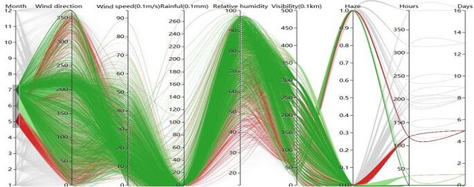

Bowen Song
Technology & Skill

I focus on the new tools and algorithms about data visualization. I constructed a visual analytics system with Qt to show the evolution of haze. And I could also use D3.js to present the data-changing trend.

I tried to recognize particular objects from remote sensing images with image processing and pattern recognition methods. And two published papers were based on this work.
I know how to build website with HTML5. And I am also interested in creating fantastic interactive effects with JavaScript.
Introduction
C++ is my main development language. Now I am also trying to use other object-oriented languages, such as JavaScript & Java.
I feel comfortable with teamwork. Until now, I have cooperated with great programmers. Together we have a lot of innovative ideas, build several projects and enjoy these processes.
The Project
Visual Analytics System
This system is based on Qt platform, and the display part is achieved through C++. VTK and GDAL library are employed to realize part of the components.
To analyze the evolution of the target, we first visualize the patterns of the vector field using streamlines. And then we cluster the streamlines spatially and temporally respectively.
moreData Dependency Diagram

The system is constructed with JavaScript and HTML, and D3.js library is used for generating diagrams.
Two different diagrams are employed here to analyze the dependency of multivariate data. The first is the calendar show. Another is the parallel coordinate, which visualizes high-dimensional geometry.
more